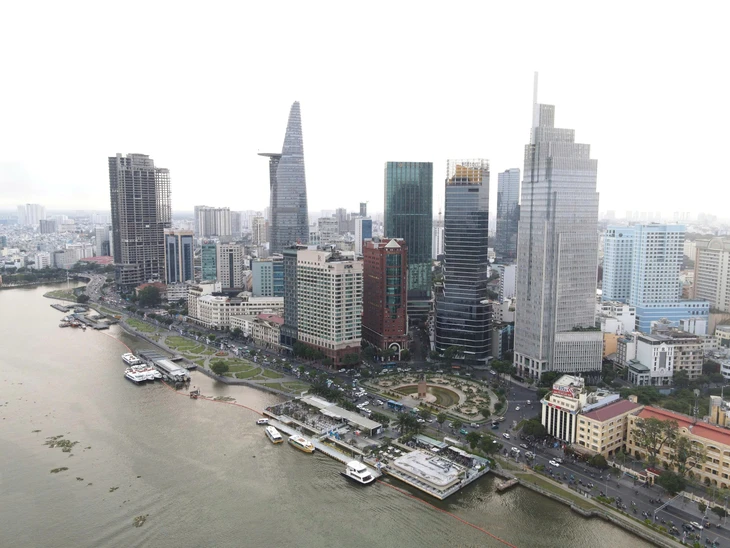

Mới đây, tại cuộc họp kinh tế - xã hội TP.HCM tháng 7-2025 (diễn ra ngày 9-8), Sở Tài chính đã báo cáo UBND TP.HCM công tác tham mưu điều chỉnh Nghị quyết 98 về cơ chế, chính sách đặc thù phát triển TP.HCM mới.
Nghị quyết 98 được Quốc hội thông qua vào ngày 24-6-2023. Nghị quyết quy định 44 cơ chế đặc thù giúp TP.HCM phát triển. Từ đó, TP.HCM đã nghiêm túc, khẩn trương triển khai thực hiện Nghị quyết số 98 theo đúng tinh thần chỉ đạo của Chính phủ.
Thành phố đã triển khai áp dụng 36/44 cơ chế. Các nội dung trọng yếu được thành phố cụ thể hóa thông qua 51 nghị quyết của Hội đồng nhân dân, hàng loạt kế hoạch, đề án và quyết định điều hành của UBND thành phố. Qua đó tạo bước chuyển đột phá trong huy động nguồn lực, khai thác hiệu quả các tiềm năng, lợi thế, thúc đẩy phát triển nhanh và bền vững.
Đến ngày 27-6-2025 Quốc hội thông qua Nghị quyết 227 cho phép chuyển tiếp áp dụng một số cơ chế, chính sách đặc thù tại một số địa phương sau khi thực hiện sắp xếp bộ máy, mở rộng địa giới hành chính.
Theo nghị quyết trên, TP.HCM mới (từ ngày 1-7) được tiếp tục triển khai Nghị quyết 98 trên địa bàn.
UBND TP.HCM đã có tờ trình (ngày 31-7-2025) đề xuất về việc điều chỉnh Nghị quyết 98 và được Thủ tướng kết luận chỉ đạo thống nhất với tờ trình tại cuộc họp ngày 2-8. Trên cơ sở đó UBND TP.HCM đã chỉ đạo các đơn vị khẩn trương rà soát, phối hợp các bộ ngành đề xuất cấp có thẩm quyền điều chỉnh, bổ sung Nghị quyết 98 theo trình tự thủ tục rút gọn.

Nghị quyết 98 đã giúp TP.HCM bứt phá phát triển kinh tế - xã hội